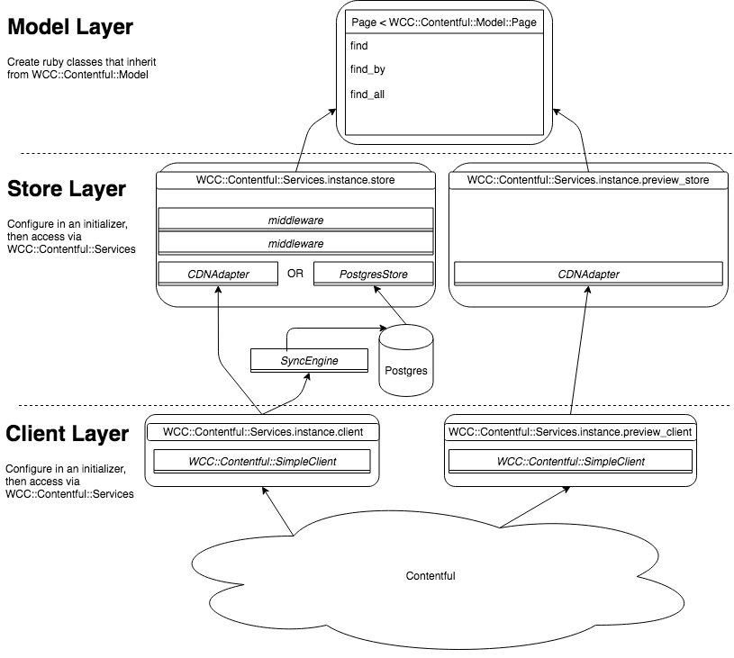

Full documentation: https://watermarkchurch.github.io/wcc-contentful/latest/wcc-contentful/
WCC::Contentful
An alternative to Contentful's contentful.rb ruby client, contentful_model, and contentful_rails gems all in one.
Table of Contents:
- Why?
- Installation
- Configuration
- Usage
- Architecture
- Test Helpers
- Advanced Configuration Example
- Connecting to Multiple Spaces
- Development
- Contributing
- License
Why did you rewrite the Contentful ruby stack?
We started working with Contentful almost 5 years ago. Since that time, Contentful's ruby stack has improved, but there are still a number of pain points that we feel we have addressed better with our gem. These are:
- Low-level caching
- Better integration with Rails & Rails models
- Automatic pagination and Automatic link resolution
- Automatic webhook management
Our gem no longer depends on any of the Contentful gems and interacts directly with the Contentful CDA and Content Management API over HTTPS.
Low-level caching
The wcc-contentful gem enables caching at two levels: the HTTP response using Faraday HTTP cache middleware, and at the Entry level using the Rails cache and the Sync API to keep it up to date. We've found these two cache layers to be very effective at reducing both round trip latency to the Content Delivery API, as well as reducing our monthly API request usage. (which reduces our overage charges. Hooray!)
At the request/response level
By default, the contentful.rb gem requires the HTTP library. While simple and straightforward to use, it is not as powerful for caching. We decided to make our client conform to the Faraday gem's API. If you prefer not to use Faraday, you can choose to supply your own HTTP adapter that "quacks like" Faraday (see the TyphoeusAdapter for one implementation).
Using Faraday makes it easy to add Middleware. As an example, our flagship Rails app that powers watermark.org uses the following configuration in Production, which provides us with instrumentation through statsd, logging, and caching:
config.connection = Faraday.new do |builder|
builder.use :http_cache,
shared_cache: false,
store: ActiveSupport::Cache::MemoryStore.new(size: 512.megabytes),
logger: Rails.logger,
serializer: Marshal,
instrumenter: ActiveSupport::Notifications
builder.use :gzip
builder.response :logger, Rails.logger, headers: false, bodies: false if Rails.env.development?
builder.request :instrumentation
builder.adapter :typhoeus
end
At the Entry level
Our stack has three layers, the middle layer being essentially a cache for individual Entry hashes parsed out of responses from the Delivery API. We were able to add a caching layer here which stores entries retrieved over the Sync API, and responds to queries with cached versions of local content when possible. We consider this to be our best innovation on the Contentful ruby stack.
We have successfully created caching layers using Memcached, Postgres, and an in-memory hash. The architecture allows other caching implementations to be created fairly easily, and we have a set of rspec specs that can verify that a cache store behaves appropriately. For more information, see the documentation on the caching modes here.
Better Rails Integration
When we initially got started with the Contentful ruby models, we encountered one problem that was more frustrating than all others: If a field exists in the content model, but the particular entry we're working with does not have that field populated, then accessing that field raised a NoMethodError. This caused us to litter our code with if defined?(entry.my_field) which is bad practice. (Note: this has since been fixed in contentful.rb v2).
We decided it was better to not rely on method_missing? (what contentful.rb does), and instead to use define_method in an initializer to generate the methods for our models. This has the advantage that calling .instance_methods on a model class includes all the fields present in the content model.
We also took advantage of Rails' naming conventions to automatically infer the content type name based on the class name. Thus in our code, we have app/models/page.rb which defines class Page << WCC::Contentful::Model::Page, and is automatically linked to the page content type ID. (Note: this is overridable on a per-model basis)
All our models are automatically generated at startup which improves response times at the expense of initialization time. In addition, our content model registry allows easy definition of custom models in your app/models directory to override fields. This plays nice with other gems like algoliasearch-rails, which allows you to declaratively manage your Algolia indexes. Another example from our flagship watermark.org:
class Page < WCC::Contentful::Model::Page
include AlgoliaSearch
algoliasearch(index_name: 'pages') do
attribute(:title, :slug)
...
end
Automatic Pagination and Link Resolution
Using the contentful_model gem, calling Page.all.load does not give you all Page entries if there are more than 100. To get the next page you must call .paginate on the response. By contrast, Page.find_all in the wcc-contentful gem gives you a Lazy Enumerator. As you iterate past the 100th entry, the enumerator will automatically fetch the next page. If you only enumerate 99 entries (say with .take(99)), then the second page will never be fetched.
Similarly, if your Page references an asset, say hero_image, that field returns a Link object rather than the actual Asset. You must either predefine how many links you need using Page.load_children(3).all.load, or detect that hero_image is a Link like if @page.hero_image.is_a? Contentful::Link and then call .resolve on the link. We found all of that to be too cumbersome when we are down in a nested partial view template that may be invoked from multiple places.
The wcc-contentful gem, by contrast, automatically resolves a link when accessing the associated attribute. So in our example above, wcc-contentful will always return a WCC::Contentful::Asset when calling @page.hero_image, even if it has to execute a query to cdn.contentful.com in order to fetch it.
Warning: This can easily lead to you exhausting your Contentful API quota if you do not carefully tune your cache, which you should be doing anyways! The default settings will use the Rails cache to try to cache these resolutions, but you are ultimately responsible for how many queries you execute!
Automatic webhook management
The wcc-contentful gem, just like contentful_rails, provides an Engine to be mounted in your Rails routes file. Unlike contentful_rails, if you also configure wcc-contentful with a Contentful Management Token and a public app_url, then on startup the wcc-contentful engine will reach out to the Contentful Management API and ensure that a webhook is configured to point to your app. This is one less devops burden on you, and plays very nicely in with Heroku review apps.
Installation
Add this line to your application's Gemfile:
gem 'wcc-contentful', require: 'wcc/contentful/rails'
If you're not using rails, exclude the require: parameter.
gem 'wcc-contentful'
And then execute:
$ bundle
Or install it yourself:
$ gem install wcc-contentful
Configure
Put this in an initializer:
# config/initializers/wcc_contentful.rb
WCC::Contentful.configure do |config|
config.access_token = <CONTENTFUL_ACCESS_TOKEN>
config.space = <CONTENTFUL_SPACE_ID>
end
WCC::Contentful.init!
All configuration options can be found in the rubydoc under WCC::Contentful::Configuration
Usage
WCC::Contentful::Model API
The WCC::Contentful::Model API exposes Contentful data as a set of dynamically
generated Ruby objects. These objects are based on the content types in your
Contentful space. All these objects are generated by WCC::Contentful.init!
The following examples show how to use this API to find entries of the page
content type:
# app/models/page.rb
class Page < WCC::Contentful::Model::Page
# You can add additional methods here
end
# Find objects by id
Page.find('1E2ucWSdacxxf233sfa3')
# => #<Page:0x0000000005c71a78 @created_at=2018-04-16 18:41:17 UTC...>
# Find objects by field
Page.find_by(slug: '/some-slug')
# => #<Page:0x0000000005c71a78 @created_at=2018-04-16 18:41:17 UTC...>
# Use operators to filter by a field
# must use full notation for sys attributes (except ID)
Page.find_all('sys.created_at' => { lte: Date.today })
# => [#<Page:0x0000000005c71a78 @created_at=2018-04-16 18:41:17 UTC...>, ... ]
# Nest queries to mimick joins
Page.find_by(subpages: { slug: '/some-slug' })
# => #<Page:0x0000000005c71a78 @created_at=2018-04-16 18:41:17 UTC...>
# Fetch an entry in a different locale
spanish_homepage = Page.find_by(slug: '/', options: { locale: 'es-US' })
# => #<Page:0x0000000005c71a78 @created_at=2018-04-16 18:41:17 UTC...>
spanish_homepage.title
# => Esta es la página principal
# Pass the preview flag to use the preview client (must have set preview_token config param)
preview_redirect = WCC::Contentful::Model::Redirect.find_by({ slug: 'draft-redirect' }, preview: true)
# => #<WCC::Contentful::Model::Redirect:0x0000000005d879ad @created_at=2018-04-16 18:41:17 UTC...>
preview_redirect_object.href
# => 'http://www.somesite.com/slug-for-redirect'
See the WCC::Contentful::Model documentation for more details.
Store API
The Store layer is used by the Model API to access Contentful data in a raw form. The Store layer returns entries as hashes parsed from JSON, conforming to the object structure returned from the Contentful CDN.
The following examples show how to use the Store API to retrieve raw data from the store:
store = WCC::Contentful::Services.instance.store
# => #<WCC::Contentful::Store::CDNAdapter:0x00007fb92a221498
store.find('5FsqsbMECsM62e04U8sY4Y')
# => {"sys"=>
# ...
# "fields"=>
# ...}
store.find_by(content_type: 'page', filter: { slug: '/some-slug' })
# => {"sys"=>
# ...
# "fields"=>
# ...}
query = store.find_all(content_type: 'page').eq('group', 'some-group')
# => #<WCC::Contentful::Store::CDNAdapter::Query:0x00007fa3d40b84f0
query.first
# => {"sys"=>
# ...
# "fields"=>
# ...}
query.result
# => #<Enumerator::Lazy: ...>
query.result.force
# => [{"sys"=> ...}, {"sys"=> ...}, ...]
The store layer, while superficially similar to the Contentful API, tries to present a different "View" over the data
which is more compatible with the Model layer. It resolves includes by actually replacing the in-memory Link objects
with their linked Entry representations. This lets you traverse the links naturally using #dig or #[]:
# Include to a depth of 3 to make sure it's included
homepage = store.find_by(slug: '/', include: 3)
# Traverse through the top nav menu => menu button 0 => about page
about_page = homepage.dig('fields', 'nav_menu', 'fields', 'buttons', 0, 'fields', 'page')
See the WCC::Contentful::Store documentation for more details.
Direct CDN API (SimpleClient)
The SimpleClient is the bottom layer, and is used to get raw data directly from the Contentful CDN. It handles response parsing and paging, but does not resolve links or transform the result into a Model class.
The following examples show how to use the SimpleClient to retrieve data directly from the Contentful CDN:
client = WCC::Contentful::Services.instance.client
# => #<WCC::Contentful::SimpleClient::Cdn:0x00007fa3cde89310
response = client.entry('5FsqsbMECsM62e04U8sY4Y')
# => #<WCC::Contentful::SimpleClient::Response:0x00007fa3d103a4e0
response.body
# => "{\n \"sys\": {\n ...
response.raw
# => {"sys"=>
# ...
# "fields"=>
# ...}
client.asset('5FsqsbMECsM62e04U8sY4Y').raw
# => {"sys"=>
# ...
# "fields"=>
# ...}
response = client.entries('fields.group' => 'some-group', 'limit' => 5)
# => #<WCC::Contentful::SimpleClient::Response:0x00007fa3d103a4e0
response.count
# => 99
response.first
# => {"sys"=>
# ...
# "fields"=>
# ...}
response.items
=> #<Enumerator::Lazy: ...>
response.items.count # Careful! This evaluates the lazy iterator and gets all pages
# => 99
response.includes
# => {"4xNnFJ77egkSMEogE2yISa"=>
# {"sys"=> ...}
# "6Fwukxxkxa6qQCC04WCaqg"=>
# {"sys"=> ...}
# ...}
The client handles Paging automatically within the lazy iterator returned by #items.
This lazy iterator does not respect the limit param - that param is only passed
through to the API to set the page size. If you truly want a limited subset of
response items, use response.items.take(n)
Entries included via the include parameter are made available on the #includes
field. This is a hash of <entry ID> => <raw entry> and makes it easy to grab
links. This hash is added to lazily as you enumerate the pages.
See the WCC::Contentful::SimpleClient documentation for more details.
Accessing the APIs within application code
The Model API is best exposed by defining your own model classes in the app/models
directory which inherit from the WCC::Contentful models.
# app/models/page.rb
class Page < WCC::Contentful::Model::Page
# You can add additional methods here
end
# app/controllers/pages_controller.rb
class PagesController < ApplicationController
def show
@page = Page.find_by(slug: params[:slug])
raise Exceptions::PageNotFoundError, params[:slug] unless @page
end
end
The WCC::Contentful::Services singleton gives access to the other configured services. You can also include the WCC::Contentful::ServiceAccessors concern to define these services as attributes in a class.
class MyJob < ApplicationJob
include WCC::Contentful::ServiceAccessors
def perform
Page.find(...)
store.find(...)
client.entries(...)
end
end
Architecture

From the bottom up:
Client Layer
The WCC::Contentful::SimpleClient provides methods to access the Contentful Content Delivery API through your favorite HTTP client gem. The SimpleClient expects an Adapter that conforms to the Faraday interface.
Creating a SimpleClient to connect using different credentials, or to connect without setting up all the rest of WCC::Contentful, is easy:
WCC::Contentful::SimpleClient::Cdn.new(
# required
access_token: 'xxxx',
space: '1234',
# optional
environment: 'staging', # omit to use master
default_locale: '*',
rate_limit_wait_timeout: 10,
instrumentation: ActiveSupport::Notifications,
connection: Faraday.new { |builder| ... },
)
You can also create a WCC::Contentful::SimpleClient::Preview to talk to the Preview API, or a WCC::Contentful::SimpleClient::Management to talk to the Management API.
Store Layer
The Store Layer represents the data store where Contentful entries are kept for
querying. By default, WCC::Contentful.init! creates a WCC::Contentful::Store::CDNAdapter
which uses a WCC::Contentful::SimpleClient::Cdn instance to query entries from
the Contentful Content Delivery API. You can also query entries from another
source like Postgres or an in-memory hash if your data is small enough.
You can also implement your own store if you want! The gem contains a suite of RSpec shared examples that give you a baseline for implementing your own store. In your RSpec suite:
# frozen_string_literal: true
require 'my_store'
require 'wcc/contentful/store/rspec_examples'
RSpec.describe MyStore do
it_behaves_like 'contentful store', {
# Set which store features your store implements.
nested_queries: true, # Does your store implement JOINs?
include_param: true # Does your store resolve links when given the :include option?
}
The store is kept up-to-date by the WCC::Contentful::SyncEngine. The SyncEngine#next methodcalls the #index method on the configured store in order to update
it with the latest data via the Contentful Sync API. For example,
the WCC::Contentful::Store::MemoryStore uses this to update the hash with the
newest version of an entry, or delete an entry out of the hash.
Store Middleware
The store layer is made up of a base store (which implements WCC::Contentful::Store::Interface), and some required middleware. The list of default middleware applied to each store is found in WCC::Contentful::Store::Factory.default_middleware
To create your own middleware simply include WCC::Contentful::Middleware::Store. Then you can optionally implement
the #transform and #select? methods:
class MyMiddleware
include WCC::Contentful::Middleware::Store
# Called for each entry that is requested out of the backing store. You can modify the entry and return it to the
# next layer.
def transform(entry, )
# Do something with the entry...
# Make sure you return it at the end!
entry
end
def select?(entry, )
# Choose whether this entry should exist or not. If you return false here, then the entry will act as though it
# were archived in Contentful.
entry.dig('fields', 'hide_until') > Time.zone.now
end
end
You can also override any of the standard Store methods.
To apply the middleware, call use when configuring the store:
config.store :direct do
use MyMiddleware, param1: 'xxx'
end
The most useful middleware is the WCC::Contentful::Middleware::Store::CachingMiddleware,
which enables :lazy_sync mode (see WCC::Contentful::Configuration#store)
Model Layer
This is the global top layer where your Rails app looks up content similarly to
ActiveModel. The models are namespaced under the root class WCC::Contentful::Model.
Each model's implementation of .find, .find_by, and .find_all simply call
into the configured Store.
Models can be initialized directly with the .new method, by passing in a hash:
entry = { 'sys' => ..., 'fields' => ... }
Page.new(entry)
The initializer must receive a localized entry. An entry found using a locale=* query
must be transformed to a localized entry using the WCC::Contentful::EntryLocaleTransformer before
passing it to your model:
entry = client.entry('1234', locale: '*').raw
localized_entry = WCC::Contentful::EntryLocaleTransformer.transform_to_locale(entry, 'en-US')
Page.new(localized_entry)
The Store layer ensures that localized entries are returned using the WCC::Contentful::Middleware::Store::LocaleMiddleware.
The main benefit of the Model layer is lazy link resolution. When a model's
property is accessed, if that property is a link that has not been resolved
yet (for example using the include: n parameter on .find_by), the model
will automatically call #find on the store to resolve that linked entry.
Note that this can easily result in lots of CDN calls to Contentful! To optimize
this you should use the include parameter and/or use a different store.
Test Helpers
To use the test helpers, include the following in your rails_helper.rb:
require 'wcc/contentful/rspec'
This adds the following helpers to all your specs:
##
# Builds a in-memory instance of the Contentful model for the given content_type.
# All attributes that are known to be required fields on the content type
# will return a default value based on the field type.
instance = contentful_create('my-content-type', my_field: 'some-value')
# => #<WCC::Contentful::Model::MyContentType:0x0000000005c71a78 @created_at=2018-04-16 18:41:17 UTC...>
instance.my_field
# => "some-value"
instance.other_required_field
# => "default-value"
instance.other_optional_field
# => nil
instance.not_a_field
# NoMethodError: undefined method `not_a_field' for #<MyContentType:0x00007fbac81ee490>
##
# Builds a rspec double of the Contentful model for the given content_type.
# All attributes that are known to be required fields on the content type
# will return a default value based on the field type.
dbl = contentful_double('my-content-type', my_field: 'other-value')
# => #<Double (anonymous)>
dbl.my_field
# => "other-value"
dbl.other_optional_field
# => nil
dbl.not_a_field
# => #<Double (anonymous)> received unexpected message :not_a_field with (no args)
##
# Builds out a fake Contentful entry for the given content type, and then
# stubs the Model API to return that content type for `.find` and `.find_by`
# query methods.
stubbed = contentful_stub('my-content-type', id: '1234', my_field: 'test')
WCC::Contentful::Model.find('1234') == stubbed
# => true
MyContentType.find('1234') == stubbed
# => true
MyContentType.find_by(my_field: 'test') == stubbed
# => true
Advanced Configuration Example
Here's an example containing all the configuration options, and a sample setup for automatic deployment to Heroku. This is intended to make you aware of what is possible, and not as a general recommendation of what your setup should look like.
# config/initializers/wcc_contentful.rb
WCC::Contentful.configure do |config|
config.access_token = ENV['CONTENTFUL_ACCESS_TOKEN']
config.space = ENV['CONTENTFUL_SPACE_ID']
config.environment = ENV['CONTENTFUL_ENVIRONMENT']
config.preview_token = ENV['CONTENTFUL_PREVIEW_ACCESS_TOKEN']
# You may or may not want to provide this to your production server...
config.management_token = ENV['CONTENTFUL_MANAGEMENT_TOKEN'] unless Rails.env.production?
config.app_url = "https://#{ENV['HOSTNAME']}"
config.webhook_username = 'my-app-webhook'
config.webhook_password = Rails.application.secrets.webhook_password
config.webhook_jobs << MyOnWebhookJob
config.store = :lazy_sync, Rails.cache if Rails.env.production?
# config.store = MyCustomStore.new
# Use a custom Faraday connection
config.connection = Faraday.new do |builder|
f.request :retry
f.request MyFaradayRequestAdapter.new
...
end
# OR implement some adapter like this to use another HTTP client
config.connection = MyNetHttpAdapter.new
config.update_schema_file = :never
end
WCC::Contentful.init!
For Heroku:
# Procfile
web: bundle exec rails s
worker: bundle exec sidekiq
release: bin/release
# bin/release
#!/bin/sh
set -e
echo "Migrating database..."
bin/rake db:migrate
echo "Migrating contentful..."
migrations_to_be_run=$( ... ) # somehow figure this out
node_modules/.bin/contentful-migration \
-s $CONTENTFUL_SPACE_ID -a $CONTENTFUL_MANAGEMENT_TOKEN \
-y -p "$migrations_to_be_run"
echo "Updating schema file..."
rake wcc_contentful:download_schema
All configuration options can be found in the rubydoc under WCC::Contentful::Configuration
Connecting to multiple spaces or environments
When initializing the WCC::Contentful gem using WCC::Contentful.init!, the gem will by default connect to the single
Contentful space that you specify in the WCC::Contentful.configure step. However the gem is also capable of connecting
to multiple spaces within the same ruby process! You just have to create and initialize a namespace.
The WCC::Contentful::ModelAPI concern makes this straightforward. Start by creating your Namespace and including the concern:
# lib/my_second_space.rb
# Note: This class must be in the "lib" folder in :zeitwerk mode, otherwise Rails 6+ will unload all your constants
# that were created in the initializer. Your models which subclass this namespace may reside in the app/models directory.
class MySecondSpace
include WCC::Contentful::ModelAPI
end
# app/models/other_page.rb
class OtherPage < MySecondSpace::Page
end
Then configure it in an initializer:
# config/initializers/my_second_space.rb
MySecondSpace.configure do |config|
# Make sure to point to a different schema file from your first space!
config.schema_file = Rails.root.join('db/second-contentful-schema.json')
config.access_token = ENV['SECOND_CONTENTFUL_ACCESS_TOKEN']
config.preview_token = ENV['SECOND_CONTENTFUL_PREVIEW_ACCESS_TOKEN']
config.space = ENV['SECOND_CONTENTFUL_SPACE_ID']
config.environment = ENV['CONTENTFUL_ENVIRONMENT']
end
# Ensure that models are reloaded in Rails development mode
Rails.application.config.to_prepare do
MySecondSpace.reload!
end
Finally, use it:
OtherPage.find('1234')
# GET https://cdn.contentful.com/spaces/other-space/environments/other-env/entries/1234
# => #<OtherPage:0x0000000005c71a78 @created_at=2018-04-16 18:41:17 UTC...>
Page.find('1234')
# GET https://cdn.contentful.com/spaces/first-space/environments/first-env/entries/1234
# => #<Page:0x0000000001271b70 @created_at=2018-04-15 12:02:14 UTC...>
The ModelAPI defines a second stack of services that you can access for lower level connections:
store = MySecondSpace.services.store
# => #<WCC::Contentful::Store::CDNAdapter:0x00007f888edac118
client = MySecondSpace.services.client
# => #<WCC::Contentful::SimpleClient::Cdn:0x00007f88942a8888
preview_client = MySecondSpace.services.preview_client
# => #<WCC::Contentful::SimpleClient::Preview:0x00007f888ccafa00
sync_engine = MySecondSpace.services.sync_engine
# => #<WCC::Contentful::SyncEngine:0x00007f88960b6b40
Note that the above services are not accessible on WCC::Contentful::Services.instance or via the WCC::Contentful::ServiceAccessors.
Important Note when using Zeitwerk with Rails 6+
When using Rails >= 6 with config.autoloader = :zeitwerk, Rails will remove any models defined in app/models after
initialization and then load them again when they are referenced. If you include WCC::Contentful::ModelAPI in a class
defined inside the app directory, this will have the effect of deleting all configuration that was set in the initializer
as well as the constants generated from your schema.
This will result in one of two errors:
NameError (uninitialized constant MySecondSpace::MyContentType)
if you try to reference a subclass such asMyContentType < MySecondSpace::MyContentTypeArgumentError (Not yet configured!)if you try toMySecondSpace.find('xxxx')to load an Entry or Asset
The solution is to have your secondary namespace in a folder which is not in the autoload_paths.
We suggest using lib, which will work so long as you have not added the lib folder to the autoload_paths as some
uninformed StackOverflow answers suggest you do.
Using a sync store with a second space
If you use something other than the CDNAdapter with your second space, you will
need to find a way to trigger MySecondSpace.services.sync_engine.next to keep
it up-to-date. The WCC::Contentful::Engine will only manage the global SyncEngine
configured by the global WCC::Contentful.configure.
The easiest way to do this is to set up your own Rails route to respond to Contentful webhooks and then configure the second Contentful space to send webhooks to this route. You could also do this by triggering it periodically in a background job using Sidekiq and sidekiq-scheduler.
Development
After checking out the repo, run bin/setup to install dependencies. Then, run bundle exec rspec to run the tests. You can also run bin/console for an interactive prompt that will allow you to experiment.
Contributing
Bug reports and pull requests are welcome on GitHub at https://github.com/watermarkchurch/wcc-contentful.
The developers at Watermark Community Church have pledged to govern their interactions with each other, with their clients, and with the larger wcc-contentful user community in accordance with the "instruments of good works" from chapter 4 of The Rule of St. Benedict (hereafter: "The Rule"). This code of ethics has proven its mettle in thousands of diverse communities for over 1,500 years, and has served as a baseline for many civil law codes since the time of Charlemagne.
License
The gem is available as open source under the terms of the MIT License.